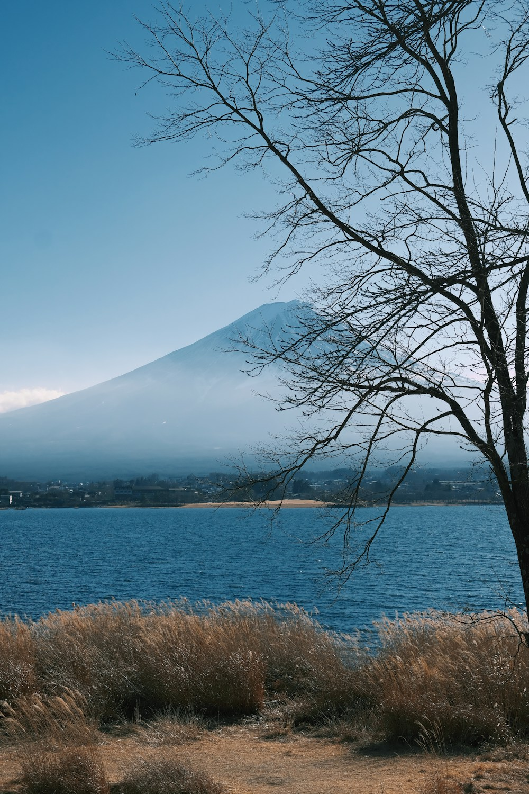
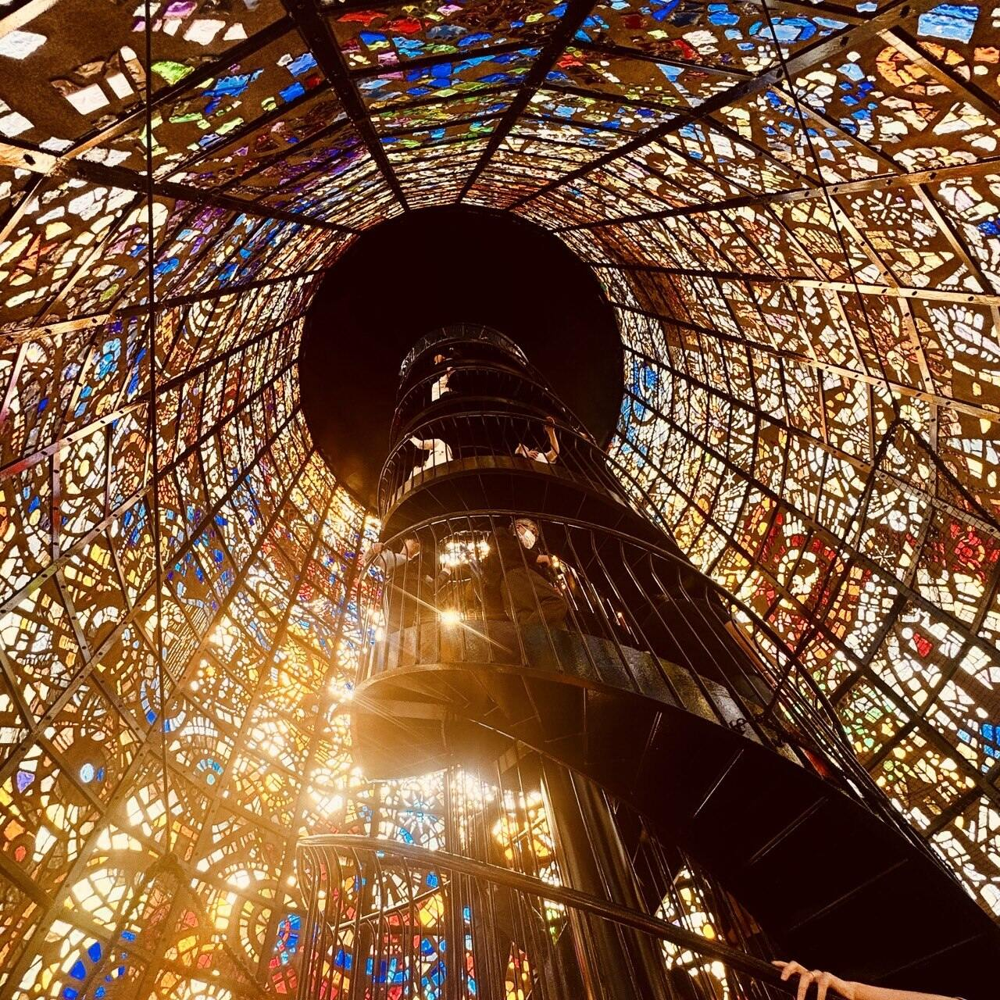
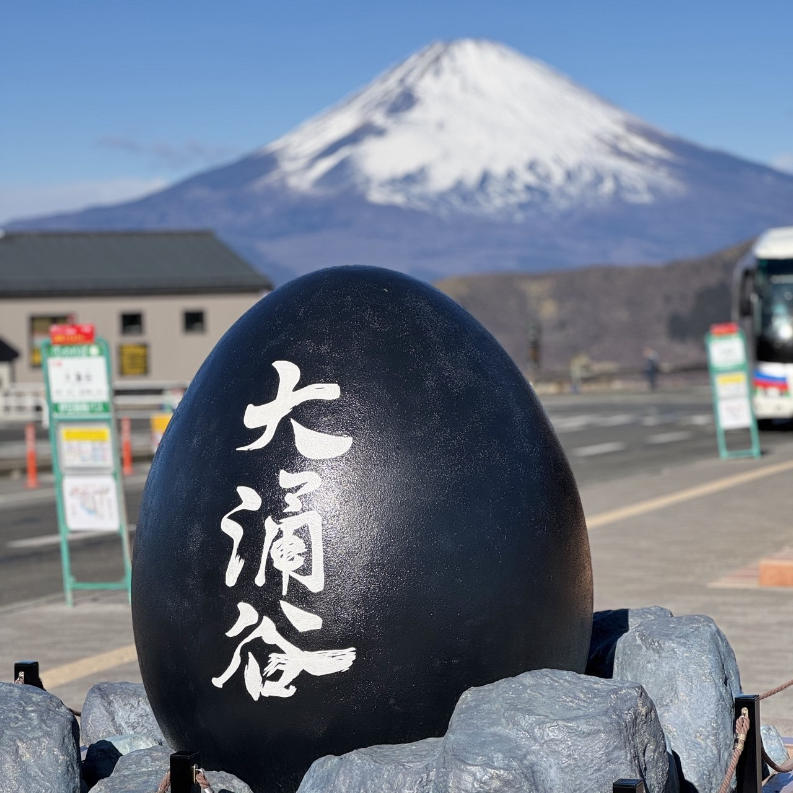

1
08:00 · старт из Токио
Выезд из города
Утро начинается рано, чтобы Хаконэ раскрывался постепенно. Мы выходим из плотной токийской ткани и переходим в более медленный, горный ритм без ощущения спешки.

Новый формат intercity-страницы. Меньше туристического шума, больше ритма дня, логики маршрута и двух сильных визуальных акцентов там, где пейзаж действительно это заслуживает.
Линия слева держит хронологию, карточки справа дают плотность текста. Фото появляются редко и только там, где нужен настоящий визуальный вдох.
Утро начинается рано, чтобы Хаконэ раскрывался постепенно. Мы выходим из плотной токийской ткани и переходим в более медленный, горный ритм без ощущения спешки.
Дорога становится частью маршрута. Меняется воздух, появляется рельеф, и сам переезд уже работает как вступление к дню, а не как техническая пауза между точками.
Это первый большой визуальный выдох. Вода, горы и открытая перспектива дают маршруту воздух. Здесь фото уместно, потому что сам момент работает как сцена, а не как иллюстрация.

После воды маршрут поднимается выше. Пространство раскрывается слоями, а движение становится более кинематографичным. Это текстовый момент, потому что здесь важнее чувство перехода, чем открытка.
Самая сильная ландшафтная пауза дня. Серый вулканический рельеф, пар, резкость воздуха. Здесь нужна вторая и последняя фотография, чтобы маршрут получил мощный визуальный пик перед возвращением к более спокойному нарративу.

Финал не должен кричать. После насыщенной середины день собирается обратно в комфорт: отдых, тёплая вода, еда, спокойный возврат в Токио без ощущения, что вас прогнали по чеклисту.
Этот блок переводит маршрут из набора остановок в понятный опыт. Он отвечает на главный вопрос клиента: каким будет сам день по ощущению.
День выглядит собранным и премиальным, а не утомительным. Есть смена сцен, но без ощущения гонки между точками.
Маршрут работает по нарастающей: выезд, раскрытие ландшафта, кульминация в Овакудани и мягкий финал с отдыхом.
Идеально для первого визита, пары или небольшой семьи, когда хочется одного сильного дня за пределами мегаполиса.
Ниже не “полезная информация”, а аккуратный operational layer. Он должен успокаивать клиента и показывать, что маршрут продуман до деталей.
Подбираем сценарий под точку старта, сезон и ритм группы.
Комбинируем разные способы передвижения, чтобы сам путь был частью впечатления.
Финал маршрута адаптируется под ужин, онсэн или ранний возврат.